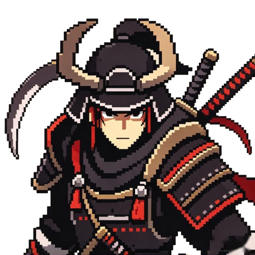

Kurogane no Oni (O Oni de Ferro Negro)
Nome verdadeiro: Ryūjin “Kuro” Hoshikage
Apelido: Kurogane no Oni
Título: O Caçador de Sombras do Norte
Origem: Hokkai, Japão
Nasceu em uma aldeia isolada nas montanhas nevadas de Hokkai, filho de um ferreiro lendário e de uma sacerdotisa que servia ao espírito da montanha. Quando ainda era criança, um clã rival invadiu a aldeia em busca do segredo da forja de aço negro guardado por seu pai. A aldeia foi consumida pelas chamas. Seu pai morreu defendendo a forja, enquanto sua mãe foi sacrificada em um ritual sombrio. Naquela noite, Ryūjin perdeu tudo. Mas, nas cinzas de sua antiga vida, nasceu Kurogane no Oni.